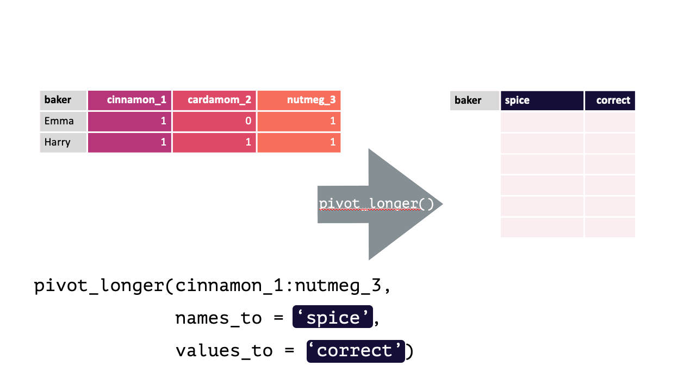
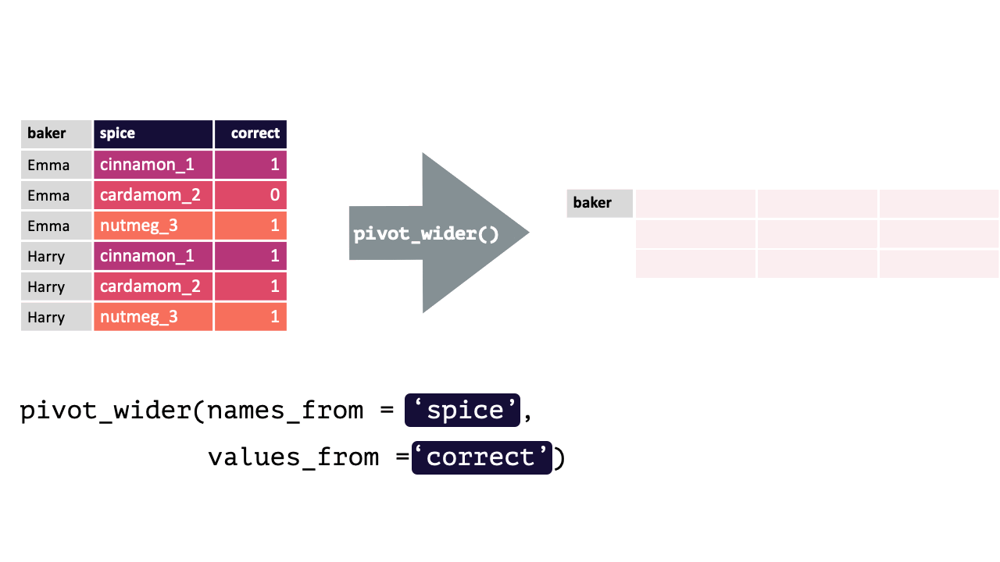

17 Data Transformation
Up to this point you have been working with data that, while sometimes needed cleaning, was already in tidy format. While you want to work with tidy data, it is not always the case that the data you get will be tidy! Also, sometimes you will need to make data not tidy for certain statistical analyses. Further, your data may not even all be in a singular object, and may be contained across several! This section is going to cover the most common data transformations you will have to implement.
17.1 Pivots
If your data does happen to all be in the same object, how can you reshape the structure that data? The two main functions to do this are pivot_longer() and pivot_wider().
Artwork by Horst (2022) (with slight modification)
17.1.1 pivot_longer()
From the source documents:
pivot_longer() “lengthens” data, increasing the number of rows and decreasing the number of columns.
This is accomplished by collapsing multiple columns into new columns (usually one with the old column names and one with the cell values). You specify the specific columns you want to collapse, what the new column for the names should be named, and what the new column for the values should be named.
pivot_longer() calls take the following form: pivot_longer(cols, names_to, values_to). There are other arguments that can be used as well to help make the function even more flexible / powerful.
Consider the following df with data from contestants on a baking show (where they had to guess a spice from a blind taste test):
bakers
#> # A tibble: 4 x 4
#> baker cinnamon_1 cardamom_2 nutmeg_3
#> <chr> <dbl> <dbl> <dbl>
#> 1 Emma 1 0 1
#> 2 Harry 1 1 1
#> 3 Ruby 1 0 1
#> 4 Zainab 0 NA 0Each row contains 3 unique observations (there just happens to be multiple measurements from the same participants). Observe how pivot_longer() can transform this df so that each row is a unique observation:
Modified from teachthat
Modified from teachthat
Note: When specifying the columns to pivot, you are literally select()’ing them. Thus, regular select() rules and helper functions can be used! e.g., Here, all columns except baker should be pivoted, !baker could have been written instead of cinnamon_1:nutmeg_3. Likewise, matches("[[:digit:]]"), since all columns have a number.
17.1.2 pivot_wider()
From the source documents:
pivot_wider() “widens” data, increasing the number of columns and decreasing the number of rows.
This is accomplished by spreading the unique values of each cell in a column into their own new column. You specify where the new column names are from and where the values for those new columns are from.
pivot_wider() calls take the following form: pivot_wider(names_from, values_from). pivot_wider() is the opposite of pivot_longer(). Thus, the pivoted df from above can be returned to its original form by using pivot_wider().
bakers_long = bakers %>%
pivot_longer(cinnamon_1:nutmeg_3,
names_to = "spice",
values_to = "correct"
)
bakers_long
#> # A tibble: 12 x 3
#> baker spice correct
#> <chr> <chr> <dbl>
#> 1 Emma cinnamon_1 1
#> 2 Emma cardamom_2 0
#> 3 Emma nutmeg_3 1
#> 4 Harry cinnamon_1 1
#> 5 Harry cardamom_2 1
#> 6 Harry nutmeg_3 1
#> 7 Ruby cinnamon_1 1
#> 8 Ruby cardamom_2 0
#> 9 Ruby nutmeg_3 1
#> 10 Zainab cinnamon_1 0
#> 11 Zainab cardamom_2 NA
#> 12 Zainab nutmeg_3 0Modified from teachthat
Modified from teachthat
To verify this is true:
bakers_long %>%
pivot_wider(names_from = spice,
values_from = correct)
#> # A tibble: 4 x 4
#> baker cinnamon_1 cardamom_2 nutmeg_3
#> <chr> <dbl> <dbl> <dbl>
#> 1 Emma 1 0 1
#> 2 Harry 1 1 1
#> 3 Ruby 1 0 1
#> 4 Zainab 0 NA 0
bakers # Original df
#> # A tibble: 4 x 4
#> baker cinnamon_1 cardamom_2 nutmeg_3
#> <chr> <dbl> <dbl> <dbl>
#> 1 Emma 1 0 1
#> 2 Harry 1 1 1
#> 3 Ruby 1 0 1
#> 4 Zainab 0 NA 017.2 Relational Data
In simple cases, the data needed to answer questions of interest will all be in a single object (df, table, etc.). At scale, you will often by working with data spread across a number of separate objects. Processes that involve working with data in multiple objects are referred to as relational data, as it is the relationship between that data which is important.
17.2.1 bind_rows()
Imagine you get a new set of data from contestants on the second day of the show:
bakers2
#> # A tibble: 4 x 4
#> baker cinnamon_1 cardamom_2 nutmeg_3
#> <chr> <dbl> <dbl> <dbl>
#> 1 Lamar 0 0 1
#> 2 Natalia 1 1 1
#> 3 Mark 1 0 NA
#> 4 Diana 1 1 0It has the exact same form as the data in bakers (before any transformations). To be able to work with all the data together, you’d just need to append bakers2 to the end of bakers. This is precisely what bind_rows() does! It will bind all the rows of the objects passed to it. Columns in each object will automatically be matched by their names, so it is critical that the common column names are identical!
bind_rows(bakers, bakers2)
#> # A tibble: 8 x 4
#> baker cinnamon_1 cardamom_2 nutmeg_3
#> <chr> <dbl> <dbl> <dbl>
#> 1 Emma 1 0 1
#> 2 Harry 1 1 1
#> 3 Ruby 1 0 1
#> 4 Zainab 0 NA 0
#> 5 Lamar 0 0 1
#> 6 Natalia 1 1 1
#> 7 Mark 1 0 NA
#> 8 Diana 1 1 0Viola!
If one object contains columns the other does not, those values will be filled with NA. In this way, bind_rows() is very flexible as it can accommodate situations where the dfs may contain different data.
bakers %>%
mutate("cumin_4" = c(1,1,0,0)) %>%
bind_rows(bakers2)
#> # A tibble: 8 x 5
#> baker cinnamon_1 cardamom_2 nutmeg_3 cumin_4
#> <chr> <dbl> <dbl> <dbl> <dbl>
#> 1 Emma 1 0 1 1
#> 2 Harry 1 1 1 1
#> 3 Ruby 1 0 1 0
#> 4 Zainab 0 NA 0 0
#> 5 Lamar 0 0 1 NA
#> 6 Natalia 1 1 1 NA
#> 7 Mark 1 0 NA NA
#> 8 Diana 1 1 0 NAThis code used mutate() to add a new column to bakers that did not exist in bakers2. This new, modified, version of bakers was then piped to a bind_rows() call that contained bakers2 as an argument. This binds the rows of the new, modified, bakers with bakers2. As you can see, all the rows from bakers2 have NA values in this new column, because it did not exist in the original df!
However, you likely will not always get so lucky and your individual dfs may not have identical columns. In such instances, your aim is to combine the individual dfs (x and y) into a single df that you can use in your visualizations and summaries. Specifically, you will need to make sure that, even if they appear in different orders, the observations from x are matched to the corresponding observation in y (usually by the values of some ID columns appearing in both).
There are a series of specific relational data functions in R designed to help with exactly this process. Below, two will be covered: mutating joins and set operations.
17.3 Mutating Joins
Mutating Joins are named as such because, like mutate(), they add new columns to a dataframe. These new columns just happen to come from another another dataframe with matched observations. There are several types of mutate joins, which all result in different new data structures.
17.3.1 inner_join()
inner_join() will return a df containing all observations (rows) in x that have a matched observation in y, for all columns in x and y. Any observations in x or y that do not have a matched in the other dataset are dropped.

Source: tidyexplain
17.3.2 left_join()
left_join() will return a df containing all observations (rows) in x and all columns from x and y. Any observation (row) in y that does not have a match in x will be dropped, and any observations (rows) in x that do not have a match in y will have an NA value in the new column.
Source: tidyexplain
17.3.3 right_join()
right_join() is basically the same as left_join() except swap x with y.

Source: tidyexplain
17.3.4 full_join()
full_join() will return a df containing all observations (rows) from both x and y regardless of whether or not they have matches. In the cases where there are is not a corresponding observation, an NA value will be generated in the new cell. full_join() is the only mutate join that will contain all the original data from both x and y in the new df.

Source: tidyexplain
17.3.5 Join Summary
Below is an oversimplified but handy graphic to illustrate what the different mutate joins return from x and y.

Source: r4ds
17.4 Set operators
Set operations, like bind_rows() expect both x and y to have the same variables. They are a quick and easy way to filter for different sets of observations.
For example, you have just been given some new data (bakers3) containing information about the contestants on an all-star version of this baking show. It contains winners from previous episodes, and you want to compare these contestants to the contestant data you have from the previous two episodes.
bakers_combined = bind_rows(bakers, bakers2)
bakers3
#> # A tibble: 4 x 4
#> baker cinnamon_1 cardamom_2 nutmeg_3
#> <chr> <dbl> <dbl> <dbl>
#> 1 Emma 1 0 1
#> 2 Jack 0 0 1
#> 3 Donna 1 NA NA
#> 4 Natalia 1 1 117.4.1 union()
union() returns a df containing all the unique observations (rows) in x and y. This will drop repeats so there is only a single entry for each unique observation.

Source: tidyexplain
union(bakers_combined, bakers3)
#> # A tibble: 10 x 4
#> baker cinnamon_1 cardamom_2 nutmeg_3
#> <chr> <dbl> <dbl> <dbl>
#> 1 Emma 1 0 1
#> 2 Harry 1 1 1
#> 3 Ruby 1 0 1
#> 4 Zainab 0 NA 0
#> 5 Lamar 0 0 1
#> 6 Natalia 1 1 1
#> 7 Mark 1 0 NA
#> 8 Diana 1 1 0
#> 9 Jack 0 0 1
#> 10 Donna 1 NA NA17.4.2 intersect()
intersect() will return a df containing only the observations (rows) that are in both x AND y, and only include unique values (no duplicates).

Source: tidyexplain
intersect(bakers_combined, bakers3)
#> # A tibble: 2 x 4
#> baker cinnamon_1 cardamom_2 nutmeg_3
#> <chr> <dbl> <dbl> <dbl>
#> 1 Emma 1 0 1
#> 2 Natalia 1 1 117.4.3 setdiff()
setdiff() will return a df containing only the observations (rows) in x that do NOT appear in y.

Source: tidyexplain
setdiff(bakers_combined, bakers3)
#> # A tibble: 6 x 4
#> baker cinnamon_1 cardamom_2 nutmeg_3
#> <chr> <dbl> <dbl> <dbl>
#> 1 Harry 1 1 1
#> 2 Ruby 1 0 1
#> 3 Zainab 0 NA 0
#> 4 Lamar 0 0 1
#> 5 Mark 1 0 NA
#> 6 Diana 1 1 0While the order of x and y does not matter for union() and intersect(), it does for setdiff(). Compare the output above to the output below!
setdiff(bakers3, bakers_combined)
#> # A tibble: 2 x 4
#> baker cinnamon_1 cardamom_2 nutmeg_3
#> <chr> <dbl> <dbl> <dbl>
#> 1 Jack 0 0 1
#> 2 Donna 1 NA NA17.6 References
Horst, A. (2022). https://github.com/allisonhorst/stats-illustrations/